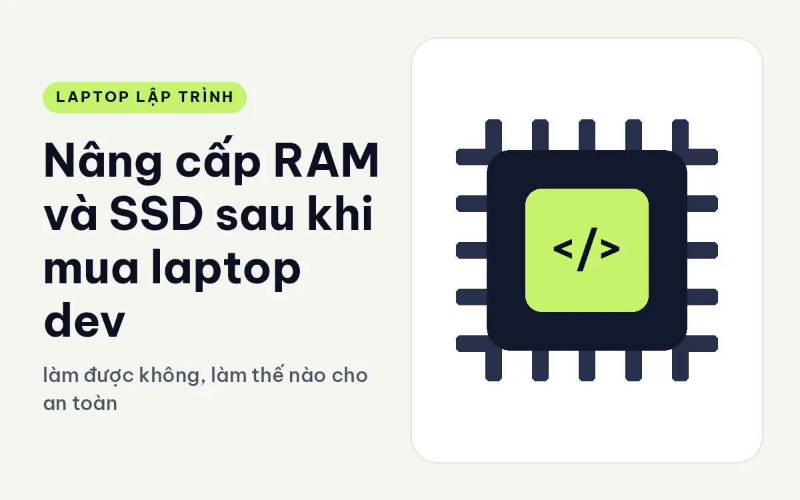
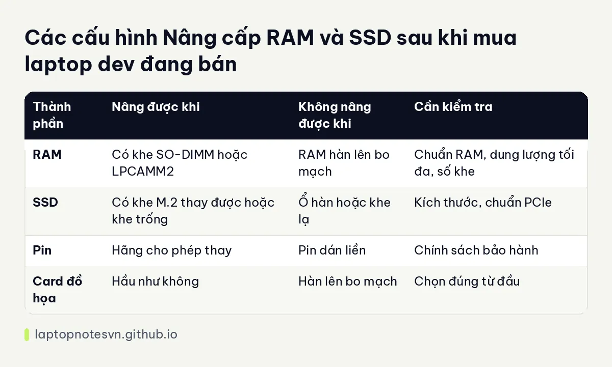

Nâng cấp RAM và SSD sau khi mua laptop dev - làm được không, làm thế nào cho an toàn

Nhiều dev mua cấu hình vừa đủ rồi tính nâng cấp sau, khi dự án lớn dần hoặc giá RAM và ổ giảm. Ý tưởng hợp lý, nhưng chỉ đúng nếu máy thực sự nâng được. Có máy cho thay cả RAM lẫn SSD dễ dàng, có máy hàn RAM và chỉ thay được ổ, có máy gần như không mở được. Biết điều này trước khi mua giúp bạn tránh mất tiền oan.
Bài này nói cách biết máy nâng được những gì, trình tự làm an toàn, các rủi ro cần để ý và các máy đang bán xét theo khả năng nâng cấp. Mọi thông tin về từng máy lấy từ mô tả công bố, bạn vẫn nên xác nhận với nhà bán trước khi quyết định.
Làm sao biết máy có nâng được
Đầu tiên hãy xem loại RAM. Nếu thông số ghi RAM hàn hoặc LPDDR5X gắn liền bo mạch, bạn không nâng được. Nếu ghi khe SO-DIMM hoặc mô-đun LPCAMM2, bạn thay được. Cần đọc cả số khe và dung lượng tối đa, vì một số máy có khe nhưng giới hạn mức dung lượng.
Với SSD, hãy tìm số khe M.2 và chuẩn của chúng. Một số máy có hai khe, cho phép gắn thêm ổ mà không cần bỏ ổ cũ. Máy chỉ có một khe thì phải thay ổ, nghĩa là cần chuyển dữ liệu sang ổ mới. Cũng lưu ý kích thước ổ M.2, vì máy mỏng có thể chỉ nhận loại ngắn hơn.
Cuối cùng là chính sách của hãng. Một số máy doanh nghiệp có hướng dẫn tháo lắp công khai và ghi rõ linh kiện người dùng tự thay được. Một số khác tuyên bố việc mở máy sẽ ảnh hưởng bảo hành. Hãy hỏi rõ trước khi mua.
Trình tự nâng cấp an toàn
Sao lưu dữ liệu quan trọng trước khi làm bất cứ việc gì. Với SSD, nếu thay ổ, bạn cần có cách chuyển dữ liệu: nhân bản ổ bằng phần mềm hoặc cài mới hệ điều hành. Nên chuẩn bị đĩa cài đặt trước.
Tắt máy hoàn toàn, rút sạc và, nếu hướng dẫn của hãng yêu cầu, ngắt pin trong trước khi chạm vào linh kiện. Dùng tua vít đúng cỡ, xả tĩnh điện bằng cách chạm vào bề mặt kim loại, và cất ốc vít theo từng vị trí để lắp lại không nhầm.
Sau khi gắn RAM mới, mở máy kiểm tra dung lượng nhận đủ chưa, chạy công cụ kiểm tra bộ nhớ nếu có. Sau khi gắn SSD mới, kiểm tra nó nhận đúng tốc độ và sức khỏe trong hệ điều hành.
Những rủi ro cần nhớ
Rủi ro lớn nhất là mua sai loại. RAM DDR5, LPDDR5X, LPCAMM2 không dùng lẫn cho nhau, và tốc độ ghi trên thanh RAM phải được máy hỗ trợ. Hãy dựa vào thông số máy để chọn, không dựa vào đoán.
Rủi ro tiếp theo là làm hỏng khi mở máy: nắp đáy bị kẹp, cáp bàn phím hay pin bị giật. Nếu bạn chưa mở laptop bao giờ, hãy xem hướng dẫn của hãng hoặc nhờ kỹ thuật viên. Chi phí nhờ thợ nhỏ so với sửa bo mạch.
Chuyện chọn dung lượng ổ phù hợp được bàn kỹ trong bài SSD bao nhiêu GB là đủ cho dev.
Còn cách phân biệt RAM hàn với RAM rời nằm ở bài khác trong loạt này, bạn chỉ cần nhớ nguyên tắc: máy ghi rõ khe hoặc mô-đun thì thay được, máy ghi RAM gắn liền bo mạch thì dung lượng lúc mua là dung lượng suốt đời máy.
Nên nâng cấp hay mua đủ ngay từ đầu
Nếu máy hàn RAM, hãy mua dung lượng bạn cần cho hai đến ba năm tới, vì không có đường quay lại. Chênh lệch giá giữa hai mức RAM khi mua mới thường nhỏ hơn nhiều so với cái giá phải đổi máy sớm. Với máy có khe rời, bạn có thể mua mức vừa đủ rồi nâng khi cần, và đây là lợi thế thực sự khi ngân sách còn hạn chế.
Với SSD, cách làm hợp lý là chọn ổ đủ dùng cho hệ điều hành, công cụ và dự án hiện tại, kèm một khoảng trống dự phòng. Nếu máy có khe thứ hai, bạn có thể thêm ổ lưu dữ liệu sau này mà không đụng đến hệ điều hành đang chạy ổn.
Bảng ghi nhớ nhanh

| Thành phần | Nâng được khi | Không nâng được khi | Cần kiểm tra |
|---|---|---|---|
| RAM | Có khe SO-DIMM hoặc LPCAMM2 | RAM hàn lên bo mạch | Chuẩn RAM, dung lượng tối đa, số khe |
| SSD | Có khe M.2 thay được hoặc khe trống | Ổ hàn hoặc khe lạ | Kích thước, chuẩn PCIe |
| Pin | Hãng cho phép thay | Pin dán liền | Chính sách bảo hành |
| Card đồ họa | Hầu như không | Hàn lên bo mạch | Chọn đúng từ đầu |
Từ lý thuyết sang máy cụ thể
Lenovo ThinkPad T14 Gen 7 (2026) dùng RAM LPCAMM2 nâng tối đa 64GB. Bản có 32GB đã khá, và nếu sau này cần thêm, bạn có đường lên mà không phải đổi máy.
DELL Pro Max 16 Plus MB16250 - Mobile Workstation (2025) có cửa bảo trì ở đáy máy để tháo RAM và SSD nhanh, theo mô tả của hãng. Đây là thiết kế thân thiện cho người muốn tự nâng cấp, nặng 2,55 kg.
Lenovo IdeaPad Slim 3 14 inch (2026) có hai khe M.2, nên gắn thêm ổ được mà không bỏ ổ cũ. Máy 14 inch nặng 1,43 kg, RAM 16GB DDR5 5600, hợp người mua máy giá vừa và tự nâng SSD sau.
Nếu bạn xem xét nhu cầu bộ nhớ, bài lập trình viên cần bao nhiêu RAM giúp ước lượng dung lượng cần nâng tới.
Đăng ngày 09/11/2026